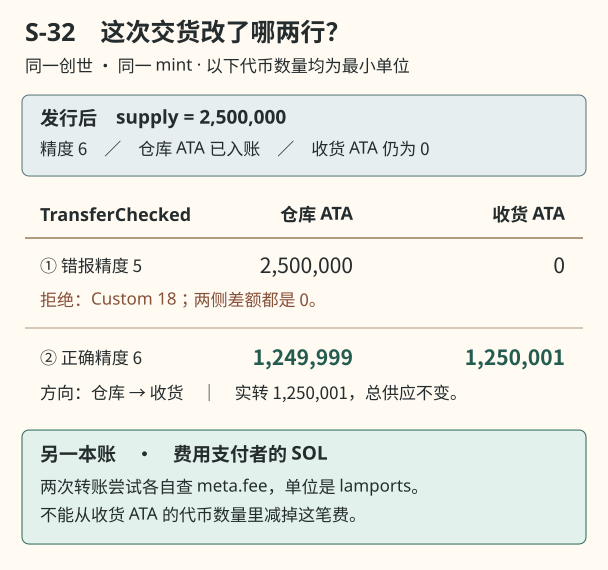

本页目录
签收 1.250001 枚。仓库少了 2,500,000 − 1,249,999 = 1,250,001，商户多了同样多，除以一百万就是订单的数。券种的地址叫 mint：同一个名字、同样的小数位都不能替代它。商户收到的是券；另一位费用支付者付的是 SOL，费用单位是 lamports，不能从券数里减。
只改订单的一栏：假如商户原本订的是另一个 mint 的券，同样要 1.250001 枚，能拿眼前两张账页签收吗？不能。两边的数量依然对得上，但对上的是另一种券；交易可以成功而订单没有履行。不要只凭签名或日志中的「转账」字样盖章。
只想读懂收货单，可以到 M09 目录自选一项独立实验。以下是选做的本地发券、查账与卷末交接。动手时会用到从字节精确读整数、按签名找本轮回执、区别推导地址与写入权限。本地券没有价值、市价或兑付承诺；只用自建单节点账本，不用浏览器钱包、公共 RPC、水龙头或真实地址。
先给交接单填对五种地址
Solana 上的代币不是每人钱包账户里额外加了一个余额字段。可以把它想成两张 SQL 表：Mint 有一行定义这是什么资产、总共多少、谁能增发；TokenAccount 每一行记录哪个 mint、哪位持有人、多少最小单位。行本身都有地址。这个类比到此为止：能改数据的是运行时指定的程序，不是任意有表名、有主键的客户端。
| 要填的东西 | 本轮怎么认 | 它不代表什么 |
|---|---|---|
| mint 地址 | 新创建的 82 字节账户；数据里的 decimals=6，supply 是 u64 |
不是铸币人的地址，也不是把所有代币装在一起的钱包 |
| mint authority、freeze authority | mintAuthority 是另一个临时公钥，可签增发；freezeAuthority=None，本 mint 没有冻结权限持有人 |
允许增发不等于能从商户的代币账户取走券。这里保留增发权，不能宣传固定供应；没有冻结权也不能把它再启用 |
| 仓库与商户的钱包公钥 | 分别是 sourceOwner、destinationOwner，出现在两个代币账户数据内的 owner 字段 |
不是这个 mint 的收付款账户地址。接收这笔转账商户不用签，但从自己的账户转出通常要由持有人或已授权的代理签 |
| 仓库与商户的 ATA | 各自是一个已初始化的 165 字节经典代币账户，只装本 mint。RPC 外层的 owner 都是经典 Token Program |
不是钱包的 SOL 余额；也不是由 ATA Program 持续拥有。一个持有人还可有其他非 ATA 的代币账户，不能只凭持有人猜本次转入哪一个 |
费用支付者 payer |
独立的本地签名人，为建户提供 lamports，也支付交易费 | 不是 mint authority、仓库或商户。可代别人创建 ATA，并不因此得到代币的支配权 |
所谓 associated token account（ATA） 是「这一钱包、这一代币程序、这一 mint」约定的默认代币账户。把三个公钥的 32 字节原值依次作 seeds，在 Associated Token Account Program 的 ID 下找 PDA，才得到地址：
address, bump = Pubkey.find_program_address(
[bytes(wallet), bytes(TOKEN), bytes(mint)], ATA_PROGRAM)
与 31 课相同，推得地址不等于该处已有数据。创建时 ATA Program 按同样的 seeds/bump 为自己的 PDA 发起 CPI，借助 System Program 建户、Token Program 初始化数据。创建结束后，能写这行代币数据的是 Token Program，它再按数据中的持有人/代理及指令签名检查能否转账。别把 Token-2022 的 ID 代进去：程序不同，同一钱包与 mint 的推导输入就不同；本课不处理扩展、转账税、转账钩子或包装 SOL。
用一张账页区分「发券」和「交货」
先发行 2.500000 枚到仓库，再从仓库转给商户。decimals=6 表示显示时除以 10^6，链上并没有六位小数的浮点字段。增发时总供应和仓库各增 2,500,000；普通转账只在这两个代币账户间移动数量，不增加供应。本实验只有两户且没有其他写入者，所以两户合计正好是供应量；在一般项目里要核本次转账的两侧差额，不能声称某两户余额之和等于全网总量。


在新创世上签五笔，保留能离线复核的原件
从仓库根目录用同一个 Bash。宿主机 CPython 3.11；setup.sh 安装 Agave 2.3.13 和 solders==0.26.0；首次下载工具要联网。source 只为当前 shell 选择程序与 Python 虚拟环境。localnet.py 用 solana-genesis、agave-validator 和当轮随机测试身份建立私有创世、启动回环节点，不用已有钱包配置。创世预载经典 SPL Token 3.5.0 与 ATA 1.1.1 的官方程序；本课不是发布了两个新程序。输出目录放在私有账本之外，退出会停节点。
bash labs/m08/setup.sh
source labs/m08/env.sh
T=labs/m08/token
WORK=$(mktemp -d)
python "$T/deliver.py" --out "$WORK/full"
# 此时 validator 已关。第二个命令不连 RPC，不再签也不再付：
python "$T/review.py" "$WORK/full/evidence.json"
deliver.py 的 --out 必填，父目录须存在，末级目录不能存在。--issue-raw 默认 2500000；--due-raw 默认 1250001，是订单要求；--send-raw 默认等于 --due-raw，是实际请求转的数。三个参数都填最小单位整数，不接受小数、负数；本练习要求 0 < send ≤ issue < 2^64，0 < due < 2^64。始终使用经典 mint、精度 6，失败对照固定传 5。安全起见没有钱包或 RPC URL 参数。
按 客户端 的发送顺序检查 evidence.json 中 receipts 的五个键；同一轮共用一个节点、mint 和双方 ATA。
mint：建户与初始化同一笔。 先查getMinimumBalanceForRentExemption(82)，让费用支付者提供免租最低余额，System Program 新建由经典 Token Program 拥有的账户；新 mint 的临时 keypair 也签建户。紧跟InitializeMint2，一并确定精度、增发权和无冻结权；两条指令原子生效。新户的建户签名不是日后的增发授权。accounts：建两户。 对仓库和商户各发一条 ATACreate。传入的账户顺序是出资者、待建 ATA、钱包、mint、System Program、Token Program。两户都已存在后，在同一份getMultipleAccounts回复里看 mint 与两个 ATA，三项数量此时全是 0。issue：真的增发一次。MintToChecked的可写账户是 mint 和仓库 ATA；授权签名人是mintAuthority。发行完拿一组快照：供应2500000、仓库2500000、商户0。这张成功回执不能叫「商户收货」。rejected：把预期精度写成 5。 仓库签的数量仍是1250001，源账户余额足够；本地仅为留下失败原件，关闭这一笔的客户端预检。链上照常执行 Token Program 的精度检查，预期meta.err={"InstructionError":[0,{"Custom":18}]}（经典程序的MintDecimalsMismatch）。这不是绕过程序检查，也不是默认给线上客户多付一次失败费的策略。delivery：传真实精度 6。 同一个仓库持有人为正确指令签名；收货 ATA 加1250001，仓库减同数。正常使用预检。两次签的是不同消息、应有不同签名。若发送应答中断，按 30 课在原节点查原签名，不以重签或新开节点猜前一笔是否成功。
对应的转账构造很短。AccountMeta 是给程序看的权限清单，不是拼在 data 后面的账户字节：
accounts = [meta(src, writable=True), meta(mint), meta(dst, writable=True),
meta(src_owner, signer=True)]
transfer = Instruction(TOKEN, struct.pack("<BQB", 12, sent, decimals), accounts)
12 是 TransferChecked 的指令标签；<Q 是 8 字节小端无符号金额，最后一字节才是客户端预期的精度，一共 10 字节。这里 mint 是只读，两个 ATA 可写，源持有人只读且签名；付款手续费的签名人另列在交易消息中。程序从已初始化账户检查 mint 一致、精度一致、账户状态与余额允许，并核对授权。检查不会替你判断「这个 mint 是不是客户点的那一种券」或「数量是否达到订单应付」。Java 服务从十进制文本收单，可用 new BigDecimal(text).movePointRight(decimals).toBigIntegerExact()，再正数和 u64 范围检查；拒绝超精度金额，不要经过 double 或对多出的一位四舍五入。
从签名字节和回执重算两本账
deliver.py 在本轮活节点按同一签名再取 getTransaction(encoding="base64", commitment="confirmed")，把带完整签名的交易字节、meta.err、日志和余额数组一起归档。accountOrder 记下多户查询的实参顺序；每份回复带 context.slot，并要求不早于相应交易 slot。minContextSlot 是下界，不是指定槽位的历史查询。我们能把前后快照归因于这一笔，是因为账本新建、地址唯一且只有实验在写；更一般的归因应看这笔交易自己的 preTokenBalances 和 postTokenBalances，多指令交易还须区分针对该订单的指令与其他资金流。
| 经典账户数据偏移（字节，左闭右开） | 怎么读 | 应和哪一栏对上 |
|---|---|---|
Mint [0:36]；[36:44]；44；45；[46:82] |
可选增发公钥、u64 LE 供应、精度、初始化标记、可选冻结公钥。账户数据里的可选公钥为 4 字节小端标签加 32 字节；None 看标签 0，不把空载荷解成授权地址 |
记录长度 82；标签 1 后的增发公钥须对；精度 6、初始化 1、冻结标签 0 |
Token account [0:32]；[32:64]；[64:72]；108 |
mint 公钥、代币持有人公钥、u64 LE 余额、账户状态。余下字段还包括委托、原生代币标志等 |
记录长度 165；两个 mint 相同，两个持有人分别匹配，状态为已初始化 1；RPC 外层 owner 都是 Token Program ID |
meta.pre/postTokenBalances |
用每行 accountIndex 在本交易的消息公钥数组里定位 ATA，核对 programId、mint、owner、uiTokenAmount.decimals，数量取字符串 uiTokenAmount.amount 转整数 |
不按数组行号猜源、目标，不用 uiAmount 浮点字段算差 |
meta.pre/postBalances 与 meta.fee |
同一交易付款人是索引 0；这些数是 lamports，10^9 lamports = 1 SOL |
单纯转券时付款人的 lamports 减额等于 fee；建 mint/ATA 时还要加转进新账户的存储余额，不把后者报作交易费 |
review.py 先从本轮钱包、代币程序和 mint 重算两端 ATA，再读账户原件确认各自属于谁。具体核 delivery 时，拿商户 ATA 的完整公钥去交易消息的公钥表找位置，记下索引。到 preTokenBalances 和 postTokenBalances 各找 accountIndex 等于它的那一行：先验 mint 和持有人，再把 uiTokenAmount.amount 当整数相减，得到商户实收。照样查仓库那一行，改用「转前减转后」，应得相同数量；两个数组的第一行不一定都是商户。这样算的是这次交易的变化，而不是商户账户最后有多少。
复核器还验消息签名、解两笔转账指令，把交易内的变化与账户快照对读；逐笔另列付费签名、slot、feeLamports 和 storageLamports。下表是默认输入的预期整数，不是固定签名、slot 或收费表：
| 截面 | supplyRaw |
sourceRaw |
destinationRaw |
|---|---|---|---|
accounts 建好空户 |
0 | 0 | 0 |
issue 增发 |
2500000 | 2500000 | 0 |
rejected 错报精度 |
2500000 | 2500000 | 0 |
delivery 正确转账 |
2500000 | 1249999 | 1250001 |
手头没有运行中的节点时，可以先下载随课的本地原件，或在仓库根目录运行 python labs/m08/token/review.py labs/m08/evidence/token/evidence.json。这份归档里，slot 5 和 6 的交易各付 10,000 lamports；只有后一笔改变了两个 ATA 的代币余额。它不替代读者新建 mint 的作业。
只有最后一张会报 ORDER MATCH_LOCAL dueRaw=1250001 receivedRaw=1250001 differenceRaw=0，退出 0。拒绝轮要能展示失败签名、对应日志和三个账户数据字节前后一致；不是节点没有处理，费用支付者的 SOL 账仍按该笔 meta.fee 结。要取未经摘要化的失败日志：
python - "$WORK/full/evidence.json" <<'PY'
import json, sys
from solders.transaction import VersionedTransaction
from base64 import b64decode
with open(sys.argv[1]) as f: e = json.load(f)
r = e['receipts']['rejected']; tx = VersionedTransaction.from_bytes(b64decode(r['transaction'][0]))
print(e['genesisHash'], tx.signatures[0], r['slot'], r['meta']['err'], r['meta']['fee'])
print(*r['meta']['logMessages'], sep='\n')
PY
改变一个输入。 应收不动，只把实际转账减 1 个最小单位，再开一个新目录、新节点：
rc=0; python "$T/deliver.py" --out "$WORK/short" --send-raw 1250000 || rc=$?
test "$rc" -eq 3
预期 delivery.meta.err=null，两户各有 1250000，合计仍等于供应。可订单 dueRaw − receivedRaw = +1，必须 HOLD_AMOUNT，不能因动作成功就放货。这里金额不符时退出 3 仍会保留完整证据；关掉节点后用 review.py 离线重读一样应退出 3，不会重复转账。两个目录的数字可对比，创世、mint、ATA、签名不可拼接。
独立作业 · 有余额但没交货的是哪一张签名？
不使用 review.py 的最后一行作答。打开少付轮的 evidence.json，在 issue 与 delivery 各找一条成功签名。用上述账户布局分别解 snapshots.issue.value[2] 和 snapshots.delivery.value[2]：先从 accountOrder 确认索引 2 是商户 ATA；再从 data 的 base64 原文取 [0:32]、[32:64] 和 [64:72]。把两个公钥解为 base58，金额按小端整数读。写一张四行收据：谁的哪种券、哪张签名只入了仓库、哪张签名才入商户、实收是否达标。用 delivery.meta.preTokenBalances 与 postTokenBalances 的目标 ATA行独立重算。
答案判据： 商户数据内 mint 与本轮 roles.mint 相同，内部 owner 与 destinationOwner 相同，外层 owner 是经典程序。发行后商户仍为 0；普通转账后商户实收 1250000，仓库同减 1250000，一张应收 1250001 的单差 +1。提交本轮 genesisHash、两张完整签名、两份目标数据和差额。发行签名、SOL 手续费或 UI 的 1.25 字样都不能补上那 1 个最小单位。
卷末验收 · 工单 S-832：接手人自己选择数量、部署、取证
需求单：给 832 号单登记一笔 9,007,199,254,741,019 个券的最小单位的应收；只为此次演示发行 9,007,199,254,741,153。同时演示一笔 2,000,032 lamports 的 SOL 付款和一项每人独立的程序登记。四联用的是同一个工单编号，不是同一笔交易：订单文件不含公钥与链身份，登记的 ticket 不是代币数量，SOL 演示不抵券款。另一位同事必须从源码运行，不能粘贴原作者上一次的签名。
从根目录另开干净工作目录。先按 29 的工具说明准备宿主 rustc 和 rustup、Cargo，按上文安装工具并 source labs/m08/env.sh。31 的构建说明给出锁文件摘要和隔离工具链的 build.sh；完整预热后可用 CARGO_NET_OFFLINE=true bash "$ROOT/registry/build.sh" --offline。下面各个 --out 都是第一次使用，链上各联各启自己的创世。
CHECK=$(mktemp -d)
ROOT=labs/m08
DUE=9007199254741019
ISSUE=9007199254741153
rustc --edition=2021 -O "$ROOT/order/main.rs" -o "$CHECK/order"
"$CHECK/order" encode 832 open "$DUE" > "$CHECK/832.bin"
"$CHECK/order" decode < "$CHECK/832.bin" > "$CHECK/832.txt"
head -c 11 "$CHECK/832.bin" > "$CHECK/832-short.bin"
rc=0; "$CHECK/order" decode < "$CHECK/832-short.bin" 2> "$CHECK/832-reject.txt" || rc=$?
test "$rc" -eq 2
python "$ROOT/payment/run.py" --out "$CHECK/payment" --lamports 2000032 --wait-expiry
bash "$ROOT/registry/build.sh"
python "$ROOT/registry/run.py" --out "$CHECK/registry" --actor B --ticket 832
python "$ROOT/token/deliver.py" --out "$CHECK/token" --issue-raw "$ISSUE" --due-raw "$DUE"
python "$ROOT/token/review.py" "$CHECK/token/evidence.json" > "$CHECK/token-review.txt"
逐联签收，不相互代证。 用以下白名单交接；带数字的结论都是对上述输入的判据。版本、地址、签名、slot、费用填本轮运行值，不预填样例值：
| 联 | 要交的原件与客户端 | 接手人应该能推翻哪一种误判 |
|---|---|---|
| 29 · 输入 | 832.bin、832.txt、832-short.bin、832-reject.txt 与 m08/order/{main.rs,order.rs} |
完整 12 字节须解出 id=832 status=Open units=9007199254741019；只给 11 字节，报长度错误退出 2，不给报价。第 29 课的 units 只是约定计数，本单另行约定计的是哪种券 |
| 30 · 原签名 | payment/ 的 A-intent.json、A-receipt.json、A-audit.json、B-held.json、expiry.json 与 m08/payment/run.py |
接收方实增 2000032 lamports。有效期过后，A 的原签名仍能定位那次成功付款；B 是已签未送的独立草稿，无 B 回执。解释为何过期不等于 A 失败 |
| 31 · 部署与账户结构 | registry/manifest.json（本轮 genesis、program ID、.so/锁文件摘要、两个 authority/PDA/bump）；两张 register 回执、revise.json、refused.json、拒绝前后两份数据。交第 31 课的程序源码、锁文件和客户端 |
以本轮 program ID 加 entry 与持有人公钥重算 PDA。按 8 字节 discriminator、32 字节 authority、8 字节小端 ticket、1 字节 bump 解出独立两户 A=3101、B=832；用 B 的签名配 A 的数据账户被拒，日志、失败签名、两户前后数据证明无串写。程序预装于私有创世，不能捏造一笔公开部署交易 |
| 32 · 交货与失败账 | token/evidence.json、token-review.txt、本课两个 Python 文件。交接单分别抄经典 Token/ATA 程序 ID、本轮 mint 地址及两户地址；附上本节的 82/165 字节布局，不能用 mint 地址填「部署的登记程序 ID」 |
两户合计保持 9007199254741153。商户应实收 9007199254741019，仓库应余 134；精度错报 5 时同一数量应被拒，失败签名和日志可查，三项代币数据不变。实付 lamports 另列。若用 JavaScript Number 接收原始整数，这种奇数在 2^53 以上会丢精度 |
让接手人裁决一个新输入。 发行量、精度和应收都不改，只把本轮计划实转改成 9007199254741018。不要重写归档或借原签名查另一条链，另起一轮：
rc=0; python "$ROOT/token/deliver.py" --out "$CHECK/token-minus-one" \
--issue-raw "$ISSUE" --due-raw "$DUE" --send-raw 9007199254741018 || rc=$?
test "$rc" -eq 3
接手人要交两种相反签收：上一轮足额；新轮交货交易仍成功但应 HOLD_AMOUNT，仓库余 135、商户少 1 个最小单位。两轮都需要保留独立创世与签名；不能互相抵扣。四联之外，共享的 setup.sh、env.sh、localnet.py 和四课的运行说明也须随源码版本交给接手人。只拿列出的公开证据，不打包整个临时目录、验证节点 ledger、缓存、target/、钱包配置、环境变量或 keypair JSON。
为免把 SBF 工具自动生成的 keypair 文件也拖进交付包，用逐项列名而非递归归档。以下在同一个 Bash、从仓库根目录执行；先收源码和四份 Markdown 操作单，再收刚跑的白名单证据。这个包用于命令行复跑，不是整个课程网站的镜像。
PKG=$(mktemp -d)
tar -cf "$PKG/S-832.tar" \
labs/{rust-order,solana-payment,registry,spl-delivery}.md \
labs/m08/{setup.sh,env.sh,localnet.py} labs/m08/order/{main.rs,order.rs} \
labs/m08/payment/run.py labs/m08/registry/{build.sh,Cargo.toml,Cargo.lock,src/lib.rs,run.py} \
labs/m08/token/{deliver.py,review.py}
tar -rf "$PKG/S-832.tar" -C "$CHECK" \
832.bin 832.txt 832-short.bin 832-reject.txt \
payment/{A-intent,A-receipt,A-audit,B-held,expiry}.json \
registry/{manifest,register-A,register-B,revise,refused,before-refusal,after-refusal}.json \
token/evidence.json token-review.txt token-minus-one/evidence.json
(cd "$PKG" && tar -tf S-832.tar && shasum -a 256 S-832.tar > S-832.sha256)
接手人在收到的 S-832.tar、S-832.sha256 所在目录执行 shasum -a 256 -c S-832.sha256，来源和成员清单另行确认。解到空目录，从解包根目录 bash labs/m08/setup.sh、source labs/m08/env.sh；先用 python labs/m08/token/review.py token/evidence.json 重看旧证据，再按工单用新的 CHECK 从源码复编、换数、签自己的测试交易。摘要相同只说明收到的包与该摘要相符，不鉴定作者，更不是共识证明。
验收边界： 这里验证的是合成本地订单与单节点 confirmed 观察。离线验签说明谁授权了消息字节，不认证提供者提供的余额、日志、slot 或创世标签；原始回执与快照仍是节点报告。生产还须由可信订单端独立约定链、具体资产和目标、确认政策并防重复入账。不能拿同事自填的 mint、数量与自造账本作真实收款证明。
查证原文
- Solana 官方：创建 mint、创建代币账户与 ATA 推导、TransferChecked 怎样检查 mint 和精度。教程示例的公钥不是本地地址。
- 本卷固定程序：Agave 2.3.13 的 SPL 程序版本清单、经典 Token 3.5.0 账户打包布局、指令标签、转账处理器与程序错误枚举。不要把这些固定长度移植成对所有代币程序的假设。
- Solana RPC：getMultipleAccounts、JSON 返回结构。对比同槽上下文的账户快照与一笔交易自己的
pre/postTokenBalances。